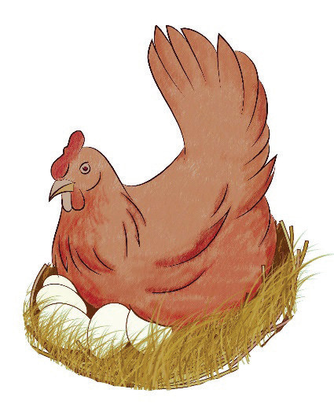
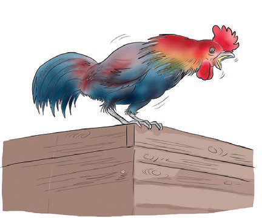
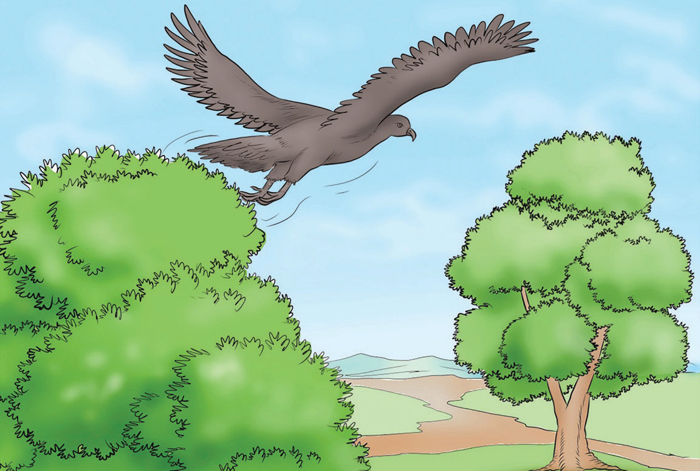

bila kuitaja sifa yao moja kubwa kuwa nyama yao hupendwa na watu wengi.


Mwewe naye aliingia kwa mbwembwe na alieleza kuwa yeye huishi juu ya miti.Mara nyingi hupenda kuruka kutoka mti mmoja kwenda mwingine.Mwewe alisema chakula chake ni vifaranga vya kuku.
